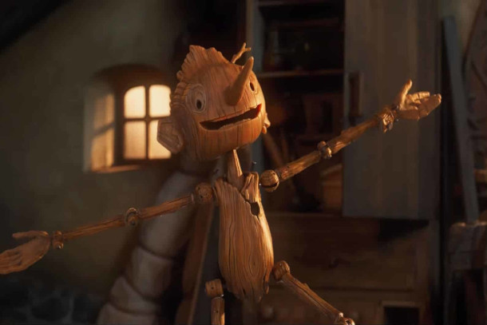
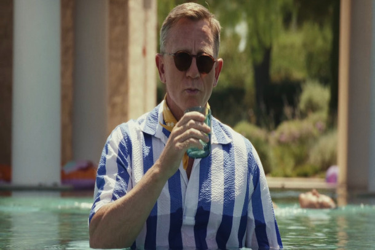

Pinóquio por Guillermo del Toro
O stop motion dirigido pelo diretor mexicano Guillermo del Toro foi um dos principais títulos lançados no ano passado pela Netflix. Como a maioria dos filmes do cineasta, a adaptação do clássico infantil ganhou uma versão bem mais sombria, muito bem recebida pelo público e pela crítica.
Glass Onion: Um Mistério Knives
A sequência de Entre Facas e Segredos (2019) foi muito aguardada pelos fãs e teve uma ótima recepção do público - atualmente a produção é o quarto filme mais assistido da Netflix, perdendo apenas para Alerta Vermelho, Não Olhe para Cima e Caixa de Pássaros.
Nada de Novo no Front

Baseado no livro homônimo lançado em 1929 por Erich Maria Remarque, o filme mostra as terríveis experiências e angústias de um jovem soldado alemão durante a Primeira Guerra Mundial.
O Farol
O segundo filme de Robert Eggers acompanha o faroleiro Old, que cuida de um farol localizado em uma ilha isolada. Quando um novo zelador chega para dividir as tarefas, os dois começam a ter tensões, enquanto o novato tenta desvendar os mistérios da ilha.
O Homem Invisível
Protagonizado por Elisabeth Moss, o filme acompanha Cecilia, uma mulher que acabou de sair de um relacionamento abusivo. Quando seu ex tira a própria vida, no entanto, ela suspeita que sua morte seja uma farsa. Agora, ela tenta provar a todos que ele continua vivo e, pior, que a está perseguindo.
Orgulho e Preconceito
A adaptação de Joe Wright para o clássico Orgulho e Preconceito é uma das mais amadas pelos fãs do livro. Protagonizado por Keira Knightley e Matthew Macfadyen, o longa se passa na Inglaterra no final do século XVIII e apresenta Elizabeth, uma das filhas mais velhas da família Bennet. Sua vida pacata muda quando ela conhece Sr. Darcy, um homem rico e bonito, mas arrogante com quem desenvolve uma relação de amor e ódio
Que Horas Ela Volta?
"A pernambucana Val se mudou para São Paulo com o intuito de proporcionar melhores condições de vida para a filha, Jéssica. Anos depois, a garota lhe telefona dizendo que quer ir para a cidade prestar vestibular. Os chefes de Val recebem a menina de braços abertos, porém, o seu comportamento complica as relações na casa."
Whiplash
O longa de Damien Chazelle (La La Land) acompanha Andrew, um promissor baterista que se matricula em um conservatório de música conduzido por um famoso instrutor. Lá, o professor leva o jovem ao limite em busca da perfeição. O filme ganhou três Oscars, incluindo Melhor Ator Coadjuvante para J.K. Simmons.
A Filha Perdida
Estrelado pela ganhadora do Oscar, Olivia Colman, no papel de Leda, o filme segue uma professora universitária em suas férias de verão. "Ao se deparar com outra mãe durante a viagem, ela fica impressionada com suas próprias memórias do terror, confusão e intensidade da maternidade precoce", aponta a sinopse oficial do filme.
Adoráveis Mulheres
Dirigido por Greta Gerwig, o filme acompanha Jo March, enquanto ela relembra os acontecimentos de sua vida, contando a cativante história das irmãs March: quatro jovens, cada uma decidida a viver conforme seus próprios termos.